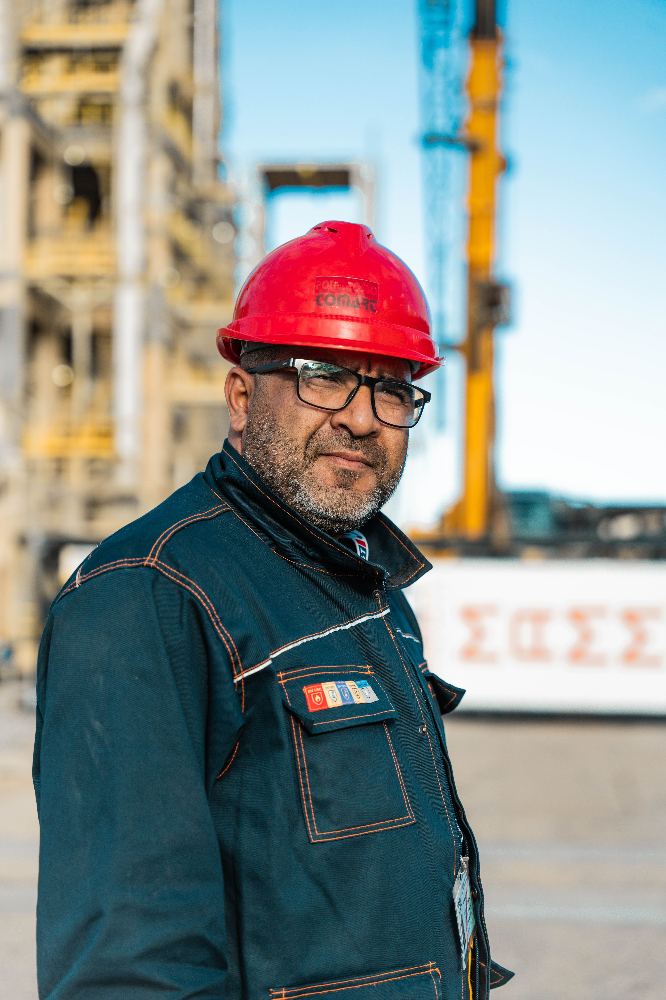
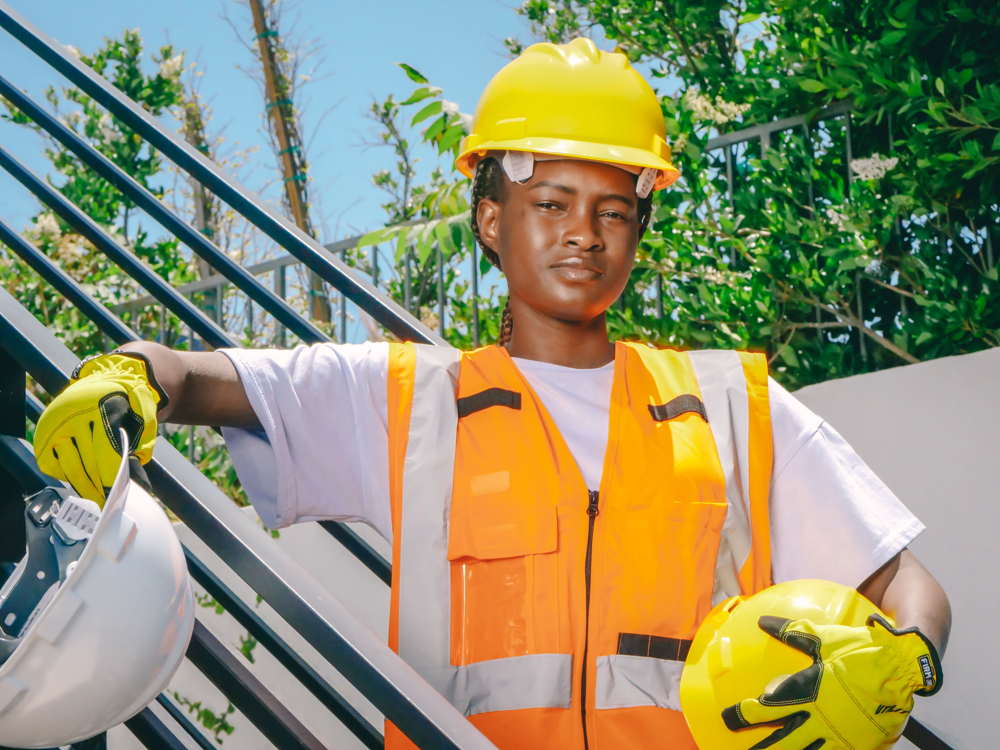
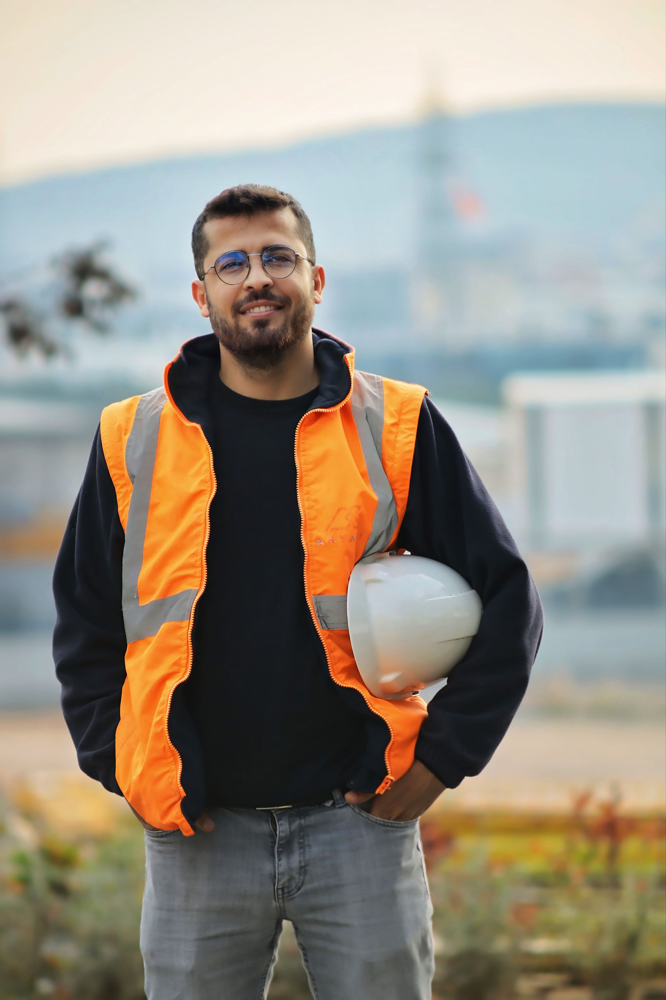

ABOUT US
Stonebridge Industrial Contractors (Pty) Ltd is a construction and renovation company established in 2015 and based in Bloemfontein, Free State. The company provides residential and commercial construction, renovations, extensions and roofing services. Our mission is to deliver reliable, high-quality construction solutions while maintaining professional work ethic, safety and customer satisfaction. Our vision is to become a trusted and respected construction company in South Africa.
WHY CHOOSE US?
- Fully licensed and insured contractors
- Transparent pricing with no hidden fees
- One-time project delivery guarantee
- Premium materials and craftsmanship
- 24/7 project support and communication
- Free detailed project estimates
THE TEAM:

David Fischer - Managing Director & Founder
Responsible for strategic planning, business development, client relationships and overall company management.
James Whitefield - Construction Manager
Responsible for project supervision, construction planning, quality control and site management.

Lerato Molefe - Project Coordinator
Responsible for project administration, scheduling, documentation and client communication.
Kabelo Dlamini - Site Supervisor
Responsible for supervising site activities, workers, materials and daily construction progress.

Daniel Roux - Senior Artisan
Responsible for skilled construction work, technical supervision and mentoring junior workers.